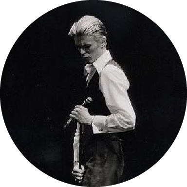

Thin White Duke

The Thin White Duke was the persona and character of English musician David Bowie during 1975 and 1976. He is primarily identified with Bowie's 1976 album Station to Station and is mentioned by name in the title track. However, Bowie had begun to adopt the "Duke" persona during the preceding Young Americans tour and promotion in 1975. The persona's look and character are somewhat based on Thomas Jerome Newton, the titular humanoid alien played by Bowie in the 1976 film The Man Who Fell to Earth.
The Thin White Duke was a controversial figure due to ostensibly pro-fascist statements made by Bowie in press interviews during this period. Soon after making the comments, Bowie claimed that they were "theatrical" remarks made in character and did not reflect his actual views. In later years, he blamed his erratic behaviour during his mid-1970s Duke era on an "astronomical" use of hard drugs (particularly cocaine) while living in Los Angeles.
At first glance, the Thin White Duke appeared more conventional than Bowie's previously flamboyant glam incarnations. Sporting well-groomed blonde hair and wearing a simple, cabaret-style wardrobe consisting of a white shirt, black trousers, and a waistcoat, the Duke was a hollow man who sang songs of romance with an agonised intensity while feeling nothing, "ice masquerading as fire". The persona has been described as "a mad aristocrat", "an amoral zombie", and "an emotionless Aryan superman". Bowie himself described the character as "A very Aryan, fascist type; a would-be romantic with absolutely no emotion at all but who spouted a lot of neo-romance."
The Thin White Duke was a controversial figure. While being interviewed in the persona in 1975 and 1976, Bowie made statements about Adolf Hitler and Nazi Germany that some interpreted as expressing sympathy for fascism or even promoting fascism. The controversy deepened in May 1976 when, while acknowledging a group of fans outside of London Victoria station, he was photographed making what some alleged to be a Nazi salute. Bowie denied this, saying that he was simply waving and the photographer captured his image mid-wave.
As early as 1976, Bowie began disavowing his allegedly pro-fascist comments and said that he was misunderstood. In an interview that year in the Daily Express, he explained that while performing in his various characters, "I'm Pierrot. I'm Everyman. What I'm doing is theatre, and only theatre... What you see on stage isn't sinister. It's pure clown. I'm using myself as a canvas and trying to paint the truth of our time on it. The white face, the baggy pants - they're Pierrot, the eternal clown putting over the great sadness." In 1977 (after retiring the Duke), Bowie stated that "I have made my two or three glib, theatrical observations on English society and the only thing I can now counter with is to state that I am NOT a Fascist".
In later years, Bowie called the period from about late 1974 until early 1977 "the darkest days of my life" due to "astronomical" usage of cocaine and other drugs. He blamed his offensive statements, erratic behavior, and fascination with Nazi and occult symbols during that time on his precarious mental state, and claimed that he could not even remember the late-1975 recording sessions for Station to Station. "It was a dangerous period for me," he explained. "I was at the end of my tether physically and emotionally and had serious doubts about my sanity." He also began to see the Thin White Duke as "a nasty character indeed", and later, "an ogre".
In an attempt to salvage his mental and physical health, Bowie left the drug-fueled social scene of Los Angeles in 1976, moving first to Geneva, Switzerland, before joining his friend Iggy Pop in West Berlin in early 1977. Though he did not publicly retire the Thin White Duke as he had Ziggy Stardust, Bowie did not appear in the persona after settling in Europe.